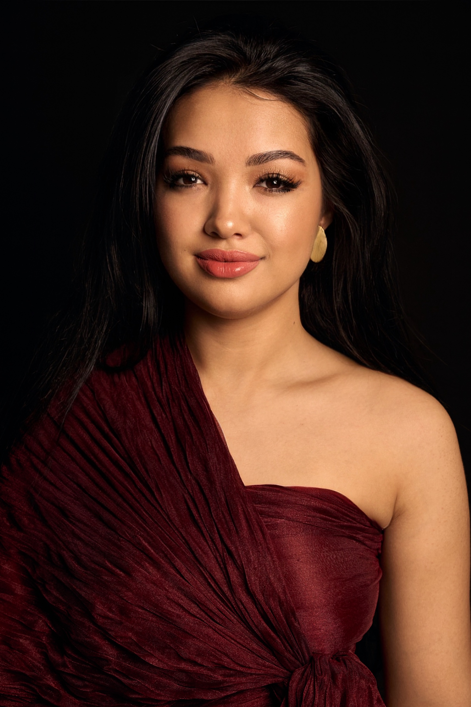
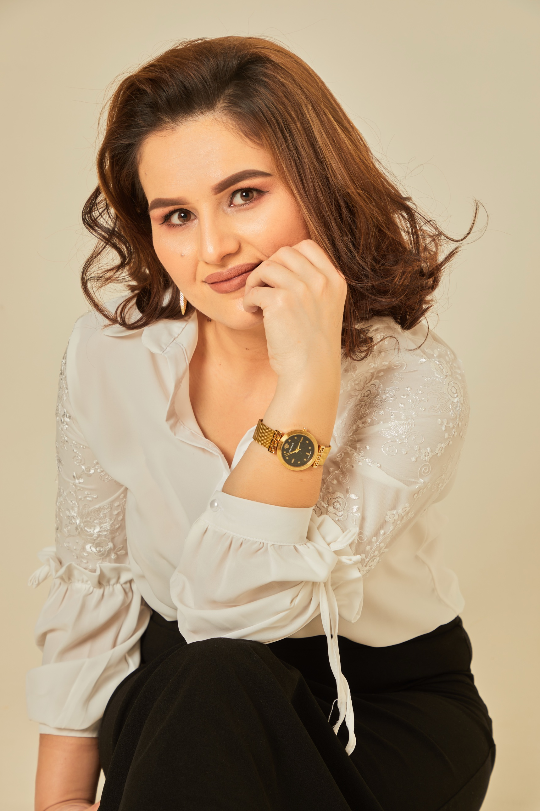

Diva klubi
uchrashuvi
Mohinur Abdullayeva bilan
Uchrashuv mavzusi
Shukronalik hissi.
1 ta katta maqsad uchun ongni tayyorlash
1 ta katta maqsad uchun ongni tayyorlash
Mehmon spiker
Sarvinoz Alisherovna
psixolog, vrach psixoterapevt

16-sentabr
11:00
Toshkent sh.